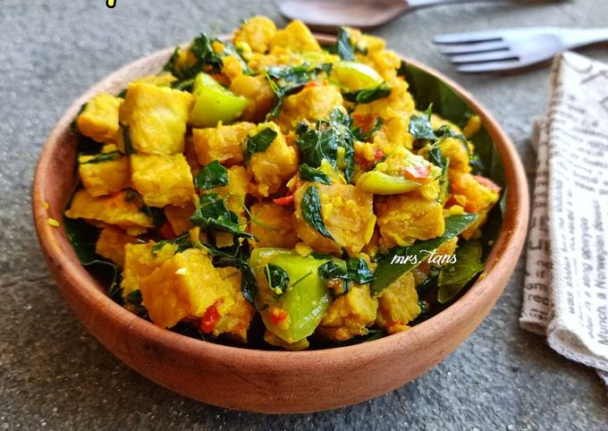

Tempe Woku

Nilai Gizi / Porsi
- Energi: 133,5 kkal
- Protein: 9,6 g
- Lemak: 7 g
- Karbohidrat: 9,6 g
Bahan-Bahan
- 300 g tempe, potong 6 bagian
- 3 buah belimbing sayur, potong-potong
- 5 tangkai daun kemangi
- 2 buah tomat, potong-potong
- 2 sdm minyak jagung
- 200 ml air
Bumbu yang Dihaluskan
- 4 butir bawang merah
- 2 siung bawang putih
- 3 buah cabai merah
- 3 cm kunyit, bakar
- 3 butir kemiri, sangrai
- 1 cm jahe
Bumbu Lainnya
- 2 batang serai, ambil putihnya, memarkan
- 5 cabai rawit utuh
- 1/2 sdm garam
- 1 sdt air jeruk nipis
Cara Membuat
- Tumis bumbu yang dihaluskan, serai, cabai rawit, dan tomat hingga harum.
- Masukkan tempe, masak sampai setengah matang.
- Tambahkan air, garam, air jeruk nipis, dan belimbing sayur, lalu didihkan.
- Masukkan daun kemangi, masak hingga matang dan bumbu meresap.
- Angkat dan tempe woku siap dinikmati.
Kembali ke Menu